Illustration similar – shows the product type.
Industrial quadruped IP67 (inspection robot)
Rugged walking robot with IP67 protection for inspecting hazardous areas, stairs and uneven terrain without staff in the risk zone.
The industrial quadruped carries out inspection rounds in buildings at risk of collapse, in contaminated areas and in plant rooms where staff cannot work, or only with high protection effort. With LiDAR, depth cameras and optional thermal imaging or gas sensor it documents condition and progress and overcomes stairs and obstacles where wheeled vehicles fail. Professional users in Germany expect IP66/IP67 protection, an emergency stop, a risk assessment under machinery law, swappable batteries and secure radio and cloud connectivity.
Technical data
| Ingress protection | IP66 / IP67 |
|---|---|
| Payload | ≥ 20 kg |
| Run time | ≥ 2 h |
| Stair climbing | ≥ 30° |
| Sensors | LiDAR + depth cam, opt.; thermal |
| Weight | ≈ 50–60 kg |
| Operating temperature | −20 … +55 °C |
| Radio | 5G / WLAN |
| Customs tariff number (HS) | 84795000 |
EU standards and regulations
2006/42/EGMachinery Directive (until 19.01.2027)VO (EU) 2023/1230Machinery Regulation (from 20.01.2027)EN ISO 12100Safety of machinery: risk assessment and risk reductionEN ISO 13849-1Safety-related parts of control systemsEN ISO 13850Emergency stop: principles for designEN 60204-1Electrical equipment of machinesEN 60529Degrees of protection provided by enclosures (IP code)RED 2014/53/EURadio Equipment Directive (5G, WLAN)TRGS 519Asbestos: demolition, remediation and maintenance work (decontamination of equipment)
More products in this category
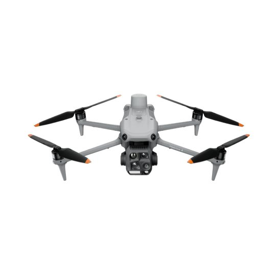
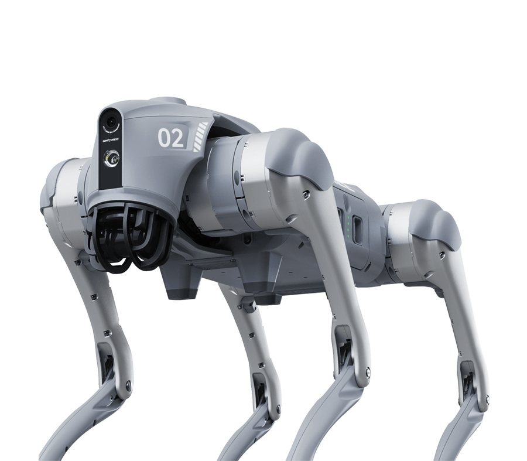
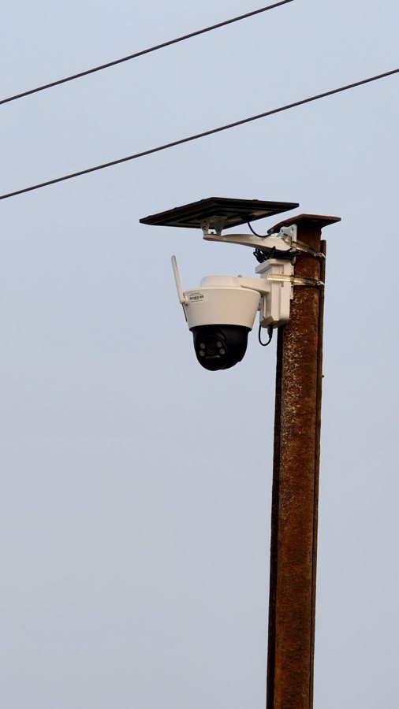
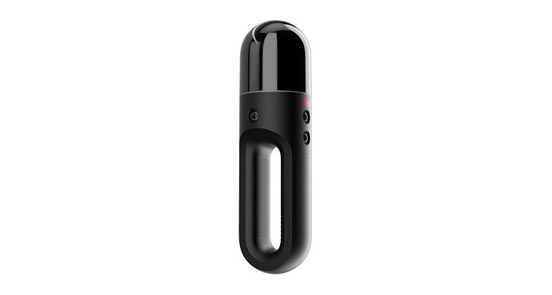
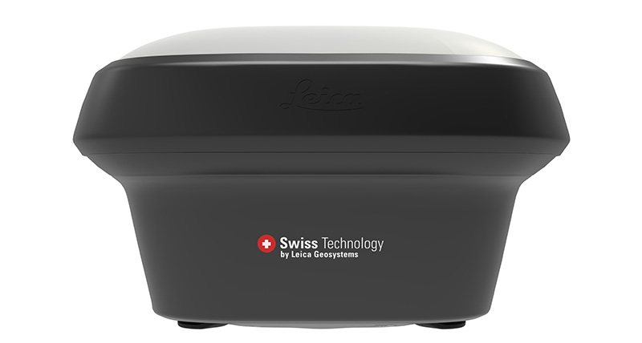
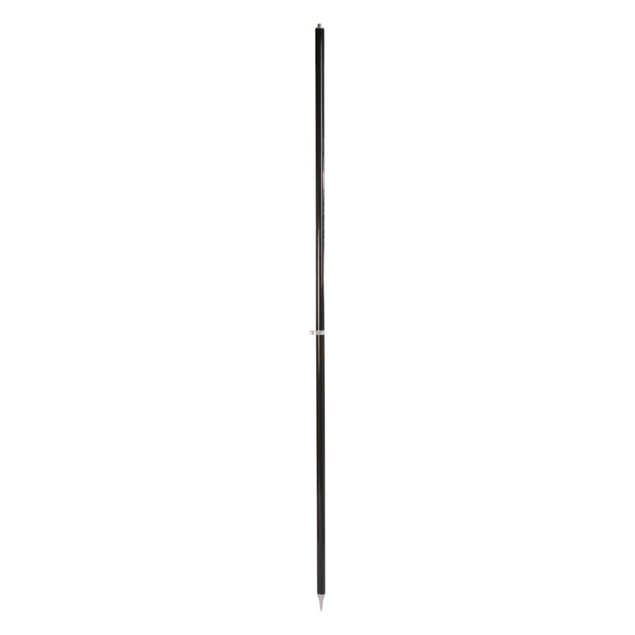
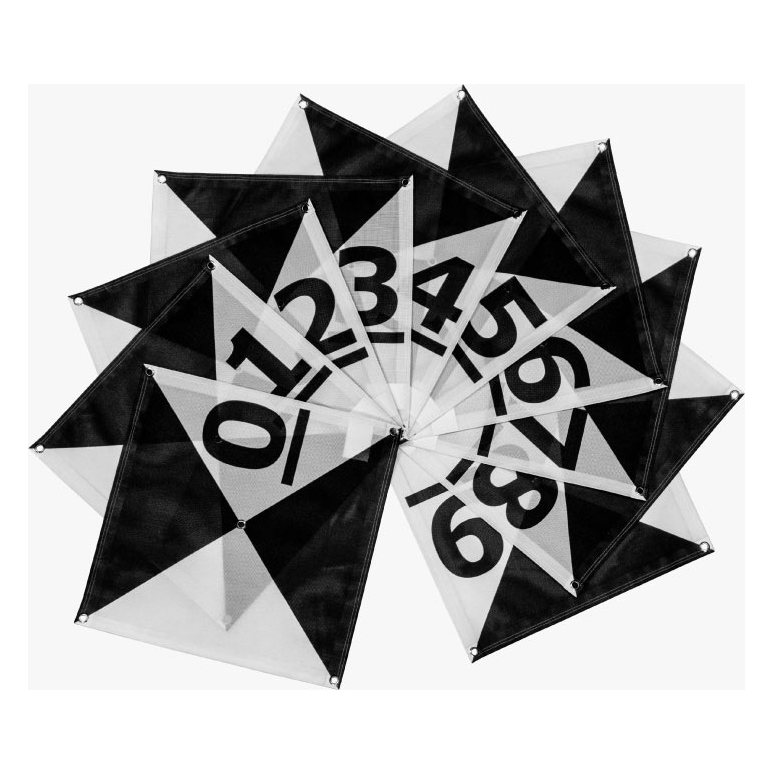
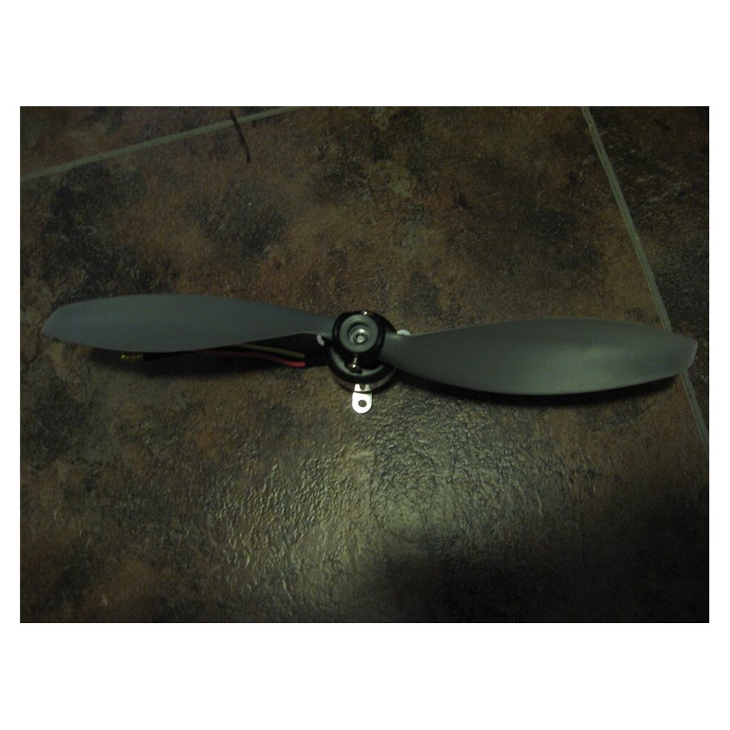
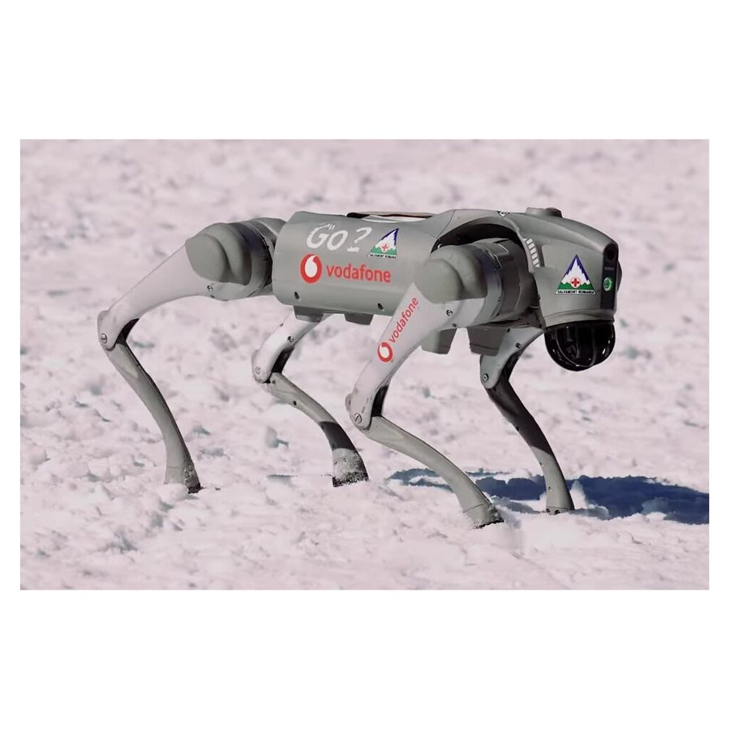
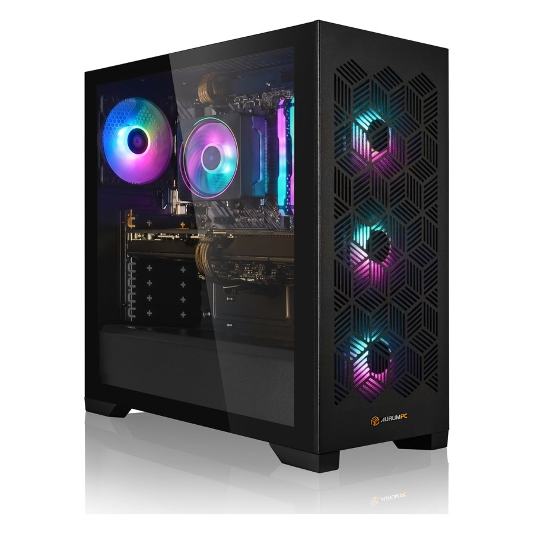
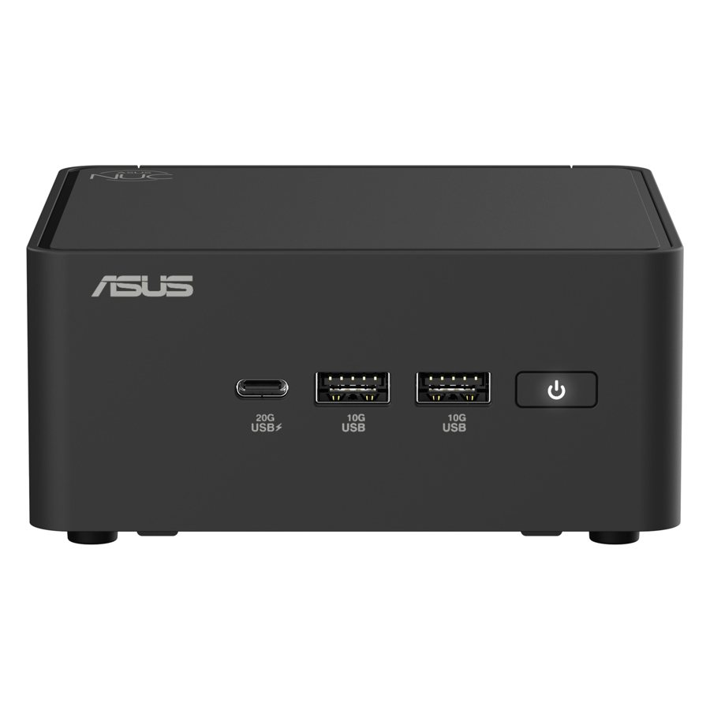
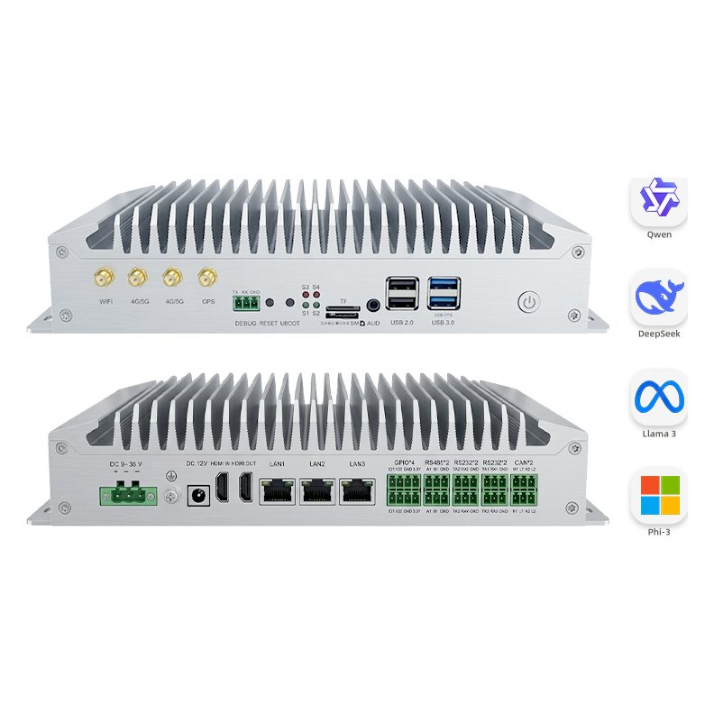
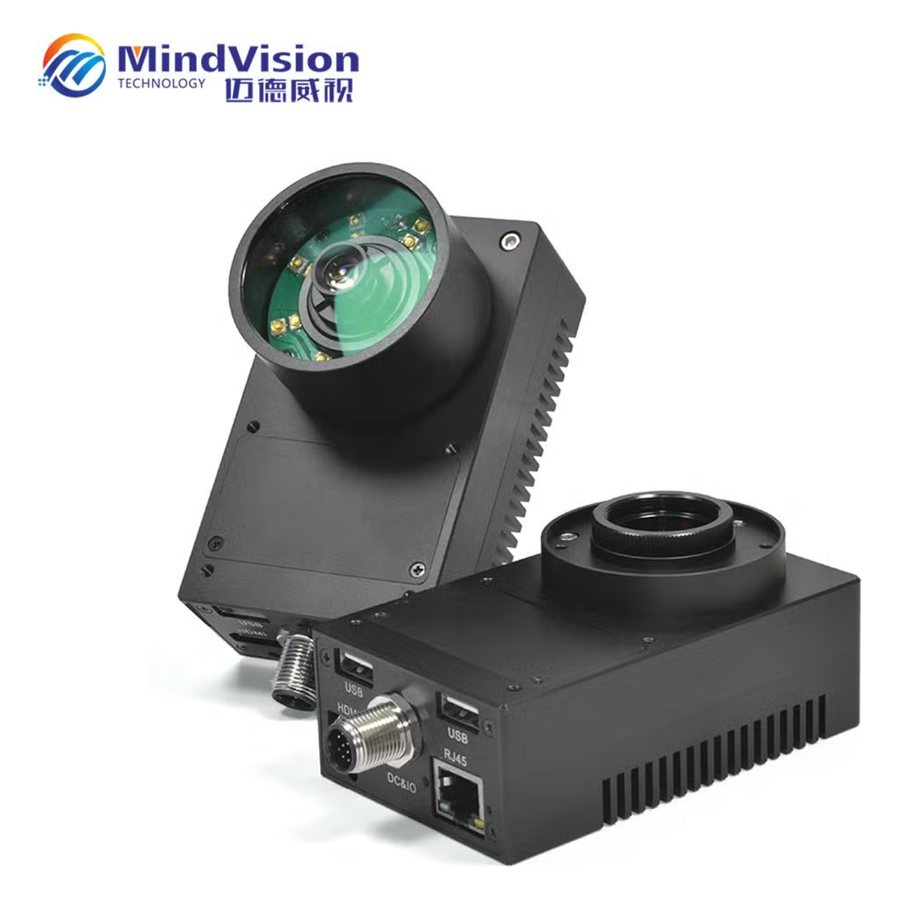
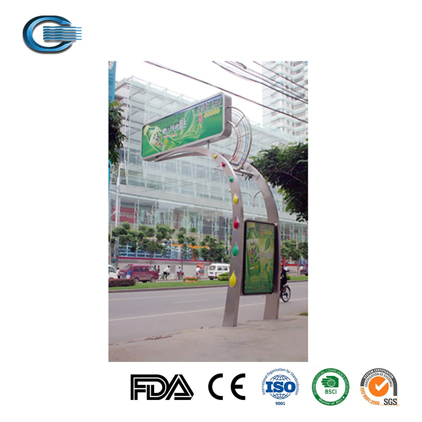